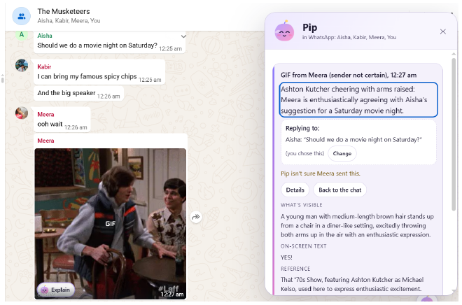
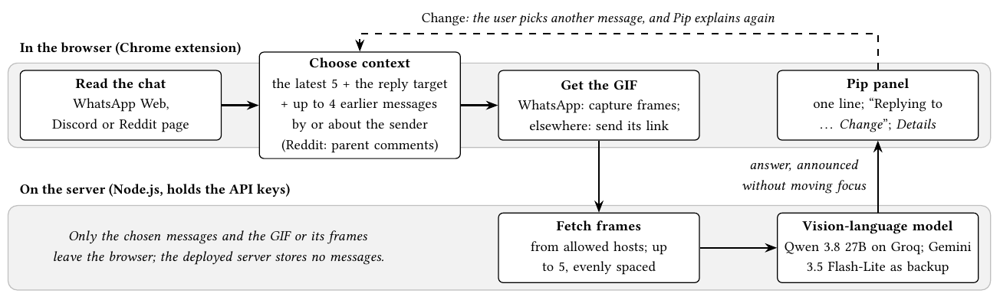

Demo
About 5 minutes: Pip explaining GIFs and stickers in WhatsApp Web with a screen reader.
The problem
On WhatsApp Web, a screen reader may announce a sticker only as “Sticker with no label”. Of about 300,000 Twitter GIFs studied in earlier work, only 0.04% had alt text. Describing the picture is not enough either: the same GIF means different things depending on which message it answers, and group chats interleave.
Same GIF, three different contexts. Choose what the model gets to see:
two friends hugging
two friends hugging
two friends hugging
Replying to: Rohan, “Dadi is in hospital again…” · Change
An illustrative chat based on a real pilot case: with the latest five messages, a model read a hug GIF as celebrating a cricket match; with the earlier message, as comforting a friend whose grandmother was ill.
Design goals
We asked a blind and low-vision online community about GIFs; seven replied publicly. Some feel left out, one called descriptions “rudimentary”, one said a GIF's joke often comes from internet culture rather than the picture, and two said GIFs don't matter to them. With two earlier pilot sessions, this led to four goals:
Not only what is visible.
And admit uncertainty (“probably”).
One line by default; Details on demand.
Announce politely; the user stays in control.
What Pip does

- Explain button next to every GIF and sticker, and Alt+J from anywhere; Esc closes and restores focus.
- One line first: “what it shows: what the sender most likely means”. Details adds what is visible, on-screen text and any cultural reference.
- Replying to: … Change lets the user pick another message and hear a revised explanation.
- Translates Hindi and Hinglish on-screen text, names slurs plainly, and can suggest reply GIFs (nothing is sent without permission).
How it works

How Pip chooses the conversation context
How the explanation is generated
Privacy
Pilot results
Pick a model to see how each context condition did on the 19 held-out cases:
Found the message the GIF answers (11 older-message cases)
Median time per request: about 1 s.
Found the message the GIF answers (11 older-message cases)
Median time per request: about 2.7 s.
I scored all responses blind to model and condition. A second rater independently scored 39 random responses; initial agreement on meaning was moderate (Cohen's κ = 0.49), so meaning scores should be read with care. In 9 of 11 older-message cases Pip used the platform's reply link, so the result mostly shows the value of that link; in the other 2, choosing the sender's earlier messages found the right target when the latest five did not.
Limitations and next steps
- A small pilot on cases we wrote and scored ourselves. Pip has not yet been studied with blind users, and it has been tested only with NVDA.
- Platform changes can break Pip, and two frames can miss the motion that makes a joke.
- Next: a study with 4–5 screen-reader users recruited online, more cases scored by outside raters, and on-device models.
Links
VibeRoom sleeps when idle and takes about a minute to wake.